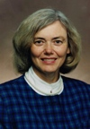
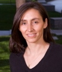
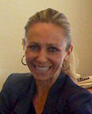
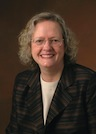
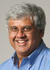
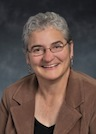
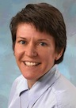

Team
Stanford University
Stanford University
Stanford University

Kathleen Eisenhardt is the Stanford W. Ascherman M.D. Professor at Stanford University's School of Engineering and the co-director of the Stanford Technology Ventures Program. She is also a visiting faculty member within INSEAD’s Entrepreneurship and Family Enterprise area. Kathleen's work centers on strategy and organization, especially in technology-based companies and high-velocity industries.Stanford University

Leticia Britos Cavagnaro is adjunct faculty of the Mechanical Engineering Department at Stanford, and she teaches creativity, innovation and design thinking at the Hasso Plattner Institute of Design (d.school). Leticia holds a Ph.D. in Developmental Biology from Stanford University's School of Medicine.She is a former member of the REDlab (Research in Education & Design - Stanford School of Education), where she explored how design thinking impacts learning in K-12 environments and higher education. She co-founded the design consultancy Lime Design Associates to bring design thinking to schools, non-profits and companies, as a means to catalyze 21st century learning skills and innovation.
VentureWell
Stanford University
 Helen L. Chen is a research scientist in the Designing Education Lab in the Department of Mechanical Engineering and the Director of ePortfolio Initiatives in the Office of the Registrar at Stanford University. She earned her undergraduate degree from UCLA and her PhD in Communication with a minor in Psychology from Stanford University in 1998. As a former research associate with the Center for the Advancement of Engineering Education (CAEE), Helen has collaborated with Professor Sheri Sheppard on various NSF-funded engineering education studies, conference presentations, and publications.
Helen L. Chen is a research scientist in the Designing Education Lab in the Department of Mechanical Engineering and the Director of ePortfolio Initiatives in the Office of the Registrar at Stanford University. She earned her undergraduate degree from UCLA and her PhD in Communication with a minor in Psychology from Stanford University in 1998. As a former research associate with the Center for the Advancement of Engineering Education (CAEE), Helen has collaborated with Professor Sheri Sheppard on various NSF-funded engineering education studies, conference presentations, and publications.Helen works closely with Association of American Colleges and Universities as a member of the Assessment Advisory Group for the Quality Collaboratives project and as a faculty member for the Institute on General Education and Assessment. Helen is also the Director of Research for the Association for Authentic, Experiential and Evidence-Based Learning (AAEEBL) and a senior scholar on LaGuardia Community College’s FIPSE-funded Connect to Learning project. She and her colleagues Tracy Penny-Light and John Ittelson are the authors of Documenting Learning with ePortfolios: A Guide for College Instructors (2011, Wiley).
VentureWell
VentureWell
Stanford University

Shannon Gilmartin, Epicenter Research Scientist, is currently conducting mixed-methods research on entrepreneurship programs and engineering students’ experiences in entrepreneurship learning environments. Shannon also is a Consulting Associate Professor at Stanford University’s School of Engineering and the Director of SKG Analysis, a research consulting firm. Shannon’s expertise is in higher education and workforce research, especially in science and engineering fields.She received her B.A. at Stanford University and her M.A. and Ph.D. at UCLA, and held two research appointments at the California Institute of Technology and Stanford before starting her consulting practice in 2006.She has taught undergraduate courses at UCLA in gender, education, and psychology, and, since 2008, has worked with Professor Sheri Sheppard’s Designing Education Lab on studies of engineering student pathways. She has published in a wide range of journals in education, gender studies, and related areas.
VentureWell
SageFox Consulting Group
Stanford University
VentureWell
SageFox Consulting Group
Stanford University
VentureWell
National Advisory Board
Cammy Abernathy   
Dean, College of Engineering, University of Florida
Cammy R. Abernathy received her S.B. degree in materials science and engineering from the Massachusetts Institute of Technology in 1980, and her M.S. and Ph.D. degrees in materials science and engineering from Stanford University in 1982 and 1985 respectively. She joined the University of Florida’s Department of Materials Science and Engineering as a professor in 1993. In 2004, she became the College’s Associate Dean for Academic Affairs, and in July 2009 was appointed Dean of the College of Engineering.
Dr. Abernathy’s research interests are in synthesis of thin-film electronic materials and devices using metal organic chemical vapor deposition and molecular beam epitaxy. She is the author of more than 500 journal publications, more than 430 conference papers, one co-authored book, seven edited books, eight book chapters and seven patents.
Dr. Abernathy is a fellow of the AVS, APS and the Electrochemical Society. She is also a member of the American Society of Engineering Education, and the Materials Research Society.
Steve Blank
Author, entrepreneur, educator
Steve Blank is a seasoned Silicon Valley entrepreneur. Translation: he has failed and--more often--succeeded, in a 21-year career building 8 Valley startups, including several with major IPO's. Along the way, he's learned an incredible amount, and has spent the last decade sharing what he's learned with entrepreneurs all over the world. Author of two famous books on entrepreneurship, The Four Steps to the Epiphany, and The Startup Owner's Manual. Steve teaches entrepreneurship at Udacity, Stanford, Berkeley, Columbia, and other major universities worldwide. He was named "Master of Innovation" by Harvard Business Review and is an advisor to many successful entrepreneurs. He is also an avid conservationist, contributing generously to preserve the California Coast.
Susan Brennan
Chief Operations Officer, Bloom Energy
Susan Brennan brings more than 24 years of manufacturing experience, including automotive vehicle, powertrain and components assembly. Susan has dedicated her career to improving American manufacturing and assuring that the United States maintains a vital manufacturing footprint, especially in areas of key technological advances. In her time as a manufacturing practitioner, she has always been a strong proponent of sustainability, starting in her first role as the Environmental and Coating Manager with Douglas and Lomason, leading the plant to the State of Iowa's first ever Waste Minimization award and, most recently, launching the all-electric Nissan Leaf in Smyrna, TN. Throughout her career, she has maintained that jobs and the environment can have a symbiotic relationship, and that passion drives her as she pursues her role at Bloom. In addition, she has created and supported organizations that encourage young women to pursue careers in math and science as a way to support future generations of technological manufacturing in the United States. Susan holds a Master of Business Administration from the University of Nebraska, Omaha and a Bachelor's of Science in Microbiology from the University of Illinois, C-U.
Jim Breyer
Partner, Accel Partners; Founder/CEO, Breyer Capital
Jim is a Partner at Accel and is the Founder/CEO of Breyer Capital, an investment and venture philanthropy firm. Jim has been an investor in over 30 consumer Internet, media, and technology companies that have completed public offerings or successful mergers. Several of these investments returned over 100 times their initial cost and many of these investments have returned over 25 times their cost to investors.
In 2013, 2012 and 2011, Forbes ranked Jim #1 in its Midas List of top technology investors. Fortune Magazine also named Jim the #1 smartest investor in technology, and one of the 10 smartest people in all of technology. In October, 2012, Jim was named to the Vanity Fair New Establishment Hall of Fame, and in June, 2012, he received the Silicon Valley Lifetime Visionary Award. In December, 2012, he was named AlwaysOn Venture Capitalist of the Year. In February, 2013, Jim was elected a fellow of the Harvard Corporation, Harvard University’s senior governing board.
Carlton Brown
President, Clark Atlanta University
Carlton E. Brown became the third president of Clark Atlanta University on August 1, 2008 after serving as Executive Vice President and Provost, beginning July 2007.
Dr. Brown brings a great wealth of executive experience and accomplishments in higher education after serving as the president of Savannah State University (SSU) for nine and a half years and holding senior-level administrative positions at several universities. Before coming to CAU, Dr. Brown was appointed by Georgia Board of Regents Chancellor Errol Davis to assist in the implementation of major system-wide initiatives.
A native of Macon, Ga., Dr. Brown received both his Bachelor of Arts degree and his doctorate from the University of Massachusetts, Amherst. He earned his doctorate in multicultural education in 1979, and his bachelor's degree in English and American Studies in 1971. After completing his undergraduate degree, Dr. Brown worked as a teacher and counselor in an inner-city alternative high school.
After serving on the faculty of the School of Education at Old Dominion University in Virginia from 1979 to 1987, he joined the faculty of Hampton University in Virginia as the Dean of the School of Education. Later, he served as Dean of the School of Liberal Arts and Education and in 1996, was promoted to Vice President for Planning and Dean of the Graduate College.
During his tenure as SSU's 11th president, the university reached several notable milestones. Among them were an increase in student enrollment of 48 percent from fall 1998 to fall 2005; the transformation of student housing and academic support facilities; the accreditation and reaccreditation of several academic programs; major increases in grants and contracts; improved student retention; and strengthened graduate programs to increase the number of minorities pursuing graduate degrees in science, technology, engineering and mathematics.
Dean, College of Engineering, Purdue University
Leah H. Jamieson is the John A. Edwardson Dean of the College of Engineering at Purdue University, Ransburg Distinguished Professor of Electrical and Computer Engineering, and holds a courtesy appointment in Purdue’s School of Engineering Education. She served as 2007 President and CEO of the IEEE. She is co-founder and past director of the EPICS – Engineering Projects in Community Service – Program.
With colleagues Edward Coyle and William Oakes, she was awarded the 2005 NAE Bernard M. Gordon Prize for Innovation in Engineering and Technology Education for the creation and dissemination of EPICS. She was an inaugural recipient of the National Science Foundation Director’s Award for Distinguished Teaching Scholars, the IEEE Education Society’s 2000 Harriet B. Rigas “Outstanding Woman Engineering Educator” Award, and the Anita Borg Institute’s 2007 “Women of Vision Award for Social Impact.” She was elected to the U.S. National Academy of Engineering “for innovations in integrating engineering education and community service” and was elected a Fellow of the IEEE for her research on parallel processing algorithms.
Kristina M. Johnson
CEO, Enduring Hydro; Former Under Secretary of Energy; Former Provost at Johns Hopkins
Kristina Johnson most recently served as Under Secretary of Energy at the U.S. Department of Energy. As Under Secretary, Kristina was responsible for unifying and managing a broad $10.5 billion Energy and Environment portfolio, including an additional $37 billion in energy and environment investments from the American Recovery and Reinvestment Act. The portfolio included research, development, demonstration and deployment projects involving the national laboratories, universities, state and local governments and private industry in renewable energy, carbon-capture and sequestration, nuclear power, energy efficiency, smart grid and nuclear waste.
Kristina previously served as Provost and Vice President for Academic Affairs at Johns Hopkins University, the largest research university in the U.S. From 1999-2007, she was Dean of the Pratt School of Engineering at Duke University. In addition to her academic career, she is an inventor and entrepreneur, holding over 45 U.S. patents (129 U.S. and international patents) and co-founder of several successful companies.
Gary S. May
Dean, College of Engineering, Georgia Institute of Technology
Gary S. May is the dean of the College of Engineering at the Georgia Institute of Technology. From May 2005-June 2011, he served as the Steve W. Chaddick School Chair of the School of Electrical and Computer Engineering, and previous to that, he was the executive assistant to Georgia Tech President G. Wayne Clough from 2002-2005. Gary joined the ECE school faculty in 1991 as a member of the School's microelectronics group. His research is in the field of computer-aided manufacturing of integrated circuits.
He was a National Science Foundation "National Young Investigator" (1993-98) and was Editor-in-Chief of IEEE Transactions on Semiconductor Manufacturing (1997-2001). He has authored over 200 articles and technical presentations in the area of IC computer-aided manufacturing. In 2001, he was named Motorola Foundation Professor, and was appointed associate chair for Faculty Development. He is the founder of Georgia Tech's Summer Undergraduate Research in Engineering/Science (SURE) program, a summer research program designed to attract talented minority students into graduate school.
Richard K. Miller
President, Olin College
Richard K. Miller was appointed President and first employee of Olin College of Engineering in 1999. He served as Dean of the College of Engineering at the University of Iowa from 1992-99. The previous 17 years were spent on the Engineering faculty at USC in Los Angeles and UCSB in Santa Barbara. With a background in applied mechanics and current interests in innovation in higher education, Miller is the author of more than 100 reviewed journal articles and other technical publications. Together with two Olin colleagues, he received the 2013 Bernard M. Gordon Prize from the U.S. National Academy of Engineering (NAE) for Innovation in Engineering and Technology Education.
A member of the NAE, he received the Marlowe Award for creative and distinguished administrative leadership from the American Society for Engineering Education in 2011. Miller served as Chair of the Engineering Advisory Committee of the U.S. National Science Foundation and has served on advisory boards and committees for Harvard University, Stanford University, the NAE and the U.S. Military Academy at West Point in addition to others. Furthermore, he has served as a consultant to the World Bank in the establishment of new universities. A frequent speaker on engineering education, he received the 2002 Distinguished Engineering Alumnus Award from the University of California at Davis, where he earned his B.S. He earned his M.S. from MIT and Ph.D. from the California Institute of Technology, where he received the 2014 Distinguished Alumni Award.
David C. Munson
Dean, College of Engineering, University of Michigan, Ann Arbor
David C. Munson became Chair of the Department of Electrical Engineering and Computer Science at the University of Michigan, Ann Arbor, in 2003. In 2006 he assumed the position of Robert J. Vlasic Dean of Engineering. From 1979 to 2003 he was with the University of Illinois at Urbana-Champaign, where he was the Robert C. MacClinchie Distinguished Professor of Electrical and Computer Engineering, Research Professor in the Coordinated Science Laboratory, and a faculty member in the Beckman Institute for Advanced Science and Technology. David’s teaching and research interests are in signal and image processing. His current research is focused on radar imaging, passive millimeter-wave imaging, and computer tomography.
He has held summer positions in digital communications and speech processing, and he has served as a consultant in synthetic aperture radar to the Lockheed Palo Alto Research Laboratory. He is co-founder of InstaRecon, Inc., a start-up to commercialize fast algorithms for image formation in computer tomography. He is affiliated with the Infinity Project, where he is coauthor of a textbook on the digital world, which is used in high schools nationwide to introduce students to engineering. David is a Fellow of the Institute of Electrical and Electronics Engineers (IEEE), a past president of the IEEE Signal Processing Society, founding editor-in-chief of the IEEE Transactions on Image Processing, and co-founder of the IEEE International Conference on Image Processing.
Diana Natalicio
President, University of Texas at El Paso
Diana Natalicio was named president of UTEP in 1988. During her long and distinguished career with the University, Dr. Natalicio has served as vice president for academic affairs, dean of liberal arts, chair of the modern languages department and professor of linguistics. Her sustained commitment to provide all residents of the Paso del Norte region access to outstanding higher education opportunities has helped make UTEP a national success story.
During Dr. Natalicio’s tenure as president, UTEP’s enrollment has grown from 14,971 to more than 23,000 students, who reflect the demographics of the Paso del Norte region from which 90% of them come. More than 78% are Mexican American, and another 6% commute to the campus from Ciudad Juárez, Mexico. UTEP’s annual budget has increased from $65 million to more than $400 million, since 1988. UTEP is designated as a research/doctoral university, recognized nationally for both the excellence and breadth of its academic and research programs. UTEP’s annual research expenditures have grown from $6 million to more than $84 million per year, and doctoral programs from one to 20 during this same period. To accommodate steady growth in enrollment, academic programs and research, over the past five years the university has managed nearly $300 million in new and renovated facilities expansion projects in science, engineering, health sciences, and other student quality-of-life related infrastructure.
Dr. Natalicio is immediate past chair of the board of the American Council on Education and serves on the board of directors of ACT. She has served on the board of trustees of the Rockefeller Foundation, on the board of governors of the U.S.-Mexico Foundation for Science, the NASA Advisory Committee (NAC), the boards of the Association of Public and Land-grant Universities, Trinity Industries, National Action Council for Minorities in Engineering, Sandia Corporation and Internet2, and was appointed by President George H.W. Bush as a member of the Advisory Commission on Educational Excellence for Hispanic Americans. Initially appointed to the National Science Board by President Bill Clinton in 1994, she served two six-year terms as a Board member and three two-year terms as the NSB’s vice chair.
Dr. Natalicio was awarded the 2013 TIAA-CREF Theodore M. Hesburgh Award for Leadership Excellence and was recognized in 2011 by the President of Mexico with the Orden Mexicana del Aguila Azteca, the highest honor bestowed on foreign nationals. She received the Harold W. McGraw, Jr. Prize in Education in 1997, was inducted into the Texas Women’s Hall of Fame in 1999, was honored with the Distinguished Alumnus Award at The University of Texas at Austin in 2006, and is the recipient of honorary doctoral degrees from Georgetown University, Smith College and the Universidad Autonoma de Nuevo Leon. A graduate of St. Louis University, Dr. Natalicio earned a master’s degree in Portuguese and a doctorate in linguistics from The University of Texas at Austin.
Dean, College of Engineering, University of California, Berkeley
S. Shankar Sastry is the Dean of Engineering at University of California, Berkeley and the faculty director of the Blum Center for Developing Economies. From 2004 to 2007 he was the Director of CITRIS (Center for Information Technology in the Interests of Society) an interdisciplinary center spanning UC Berkeley, Davis, Merced and Santa Cruz. He has served as Chairman, Department of Electrical Engineering and Computer Sciences, University of California, Berkeley from January 2001 through June 2004. From 1999 to early 2001, he was on leave from Berkeley as Director of the Information Technology Office at the Defense Advanced Research Projects Agency (DARPA). From 1996-1999, he was the Director of the Electronics Research Laboratory at Berkeley.
Dr. Sastry received his Ph.D. degree in 1981 from the University of California, Berkeley. He was on the faculty of MIT as Asst. Professor from 1980 to 1982 and Harvard University as a chaired Gordon McKay professor in 1994. His areas of personal research are resilient network control systems, cybersecurity, autonomous and unmanned systems (especially aerial vehicles), computer vision, nonlinear and adaptive control, control of hybrid and embedded systems, and software.
Beverly Daniel Tatum
President, Spelman College
A 2013 recipient of the Carnegie Academic Leadership Award, Dr. Beverly Daniel Tatum has served as president of Spelman College since 2002. Her tenure as president has been marked by a period of great innovation and growth. Spelman College, long recognized as the leading educator of women of African descent, is now ranked among the top 100 liberal arts colleges in the nation and is one of the most selective women’s colleges in the United States. Overall, scholarship support for Spelman students has tripled since 2002, and opportunities for faculty research and development have expanded significantly. In 2008, the Gordon-Zeto Fund for International Initiatives was established with a gift of $17,000,000, creating more opportunities for faculty and student travel and increased funding for international students. Alumnae support of the annual fund has also tripled, reaching a record high of 41% in 2011. Campus improvements include the award-winning renovation of four historic buildings and the 2008 completion of a new “green” residence hall, increasing on-campus housing capacity by more than 25% and establishing the campus commitment to environmental sustainability for the 21st century. In 2012 Dr. Tatum made the bold decision to withdraw from NCAA intercollegiate sports participation, a program serving less than 100 students, in favor of a campus-wide wellness initiative designed to impact the entire student community of 2100. Collectively, these improvements serve as the foundation for Strengthening the Core: The Strategic Plan for 2015, which focuses on global engagement, expanded opportunities for undergraduate research and internships, alumnae-student connections, leadership development and service learning linked to an increasingly interdisciplinary curriculum.
An accomplished administrator, Dr. Tatum is widely recognized as a race relations expert and leader in higher education. Her areas of research include racial identity development, and the role of race in the classroom. She is the author of Can We Talk About Race? And Other Conversations in an Era of School Resegregation (2007) and “Why Are All the Black Kids Sitting Together in the Cafeteria?” and Other Conversations about Race (1997) as well as Assimilation Blues: Black Families in a White Community (1987). A Fellow of the American Psychological Association, in 2005 Dr. Tatum was awarded the prestigious Brock International Prize in Education for her innovative leadership in the field.
In addition to her active involvement in the Atlanta community, Dr. Tatum is a member of national non-profit boards including the Institute for International Education, the Carnegie Foundation for the Advancement of Teaching, and Teach for America. Appointed by President Obama, she is a member of the Advisory Board for the White House Initiative on Historically Black Colleges and Universities. She also serves on the Georgia Power corporate board of directors.
She holds a B.A. degree in psychology from Wesleyan University, and M.A. and Ph.D. in clinical psychology from University of Michigan as well as an M.A. in Religious Studies from Hartford Seminary. Prior to her appointment at Spelman, she served as dean and acting president at Mount Holyoke College. President Tatum is married to Dr. Travis Tatum, professor emeritus of education; they are the parents of two adult sons.
Provost and Executive Vice President for Academic Affairs, Texas A&M University
Karan L. Watson has served as provost and executive vice president for academic affairs of Texas A&M University since March 2011. She previously served as vice provost and as dean of faculties and associate provost. She joined the faculty in 1983 and is currently a Regents Professor in the Department of Electrical and Computer Engineering and in the Department of Computer Science and Engineering.
Karan is the president of ABET, and a fellow of the Institute of Electrical and Electronic Engineers (IEEE) and the American Society for Engineering Education. Her awards and recognitions include the U.S. President's Award for Mentoring Minorities and Women in Science and Technology, the American Association for the Advancement of Science mentoring award, and the IEEE International Undergraduate Teaching Award. Since 1991, Karan has served as an accreditation evaluator and commissioner and is now on the Board of Directors for ABET, Inc., formerly the Accreditation Board for Engineering and Technology.
Curation Board (Emeritus)
For the first two years of the Epicenter grant, our curation board was instrumental in identifying and gathering ideologies, pedagogies, methods, tools and other resources related to innovation and entrepreneurship education.
Mark’s honors include an Intel Foundation Graduate Fellowship to study computer-aided design tools and methodologies for easier implementation of arithmetic hardware onto FPGA devices. His current research interests are mobile, social, and ubiquitous computing; engineering education, in particular design and student motivation; and reconfigurable computing.
His research has been used to develop or guide new innovation programs in organizations as diverse as Hewlett-Packard, Avery Dennison, Clorox, Edmunds.com, Mars, Canadian Health Services, and Silicon Valley start-ups. He teaches corporate executive programs and serves on the advisory boards for Physic Ventures and American River Ventures. Andrew is the founding director of two key centers at the University of California, Davis—the Center for Entrepreneurship and the Energy Efficiency Center.

Elizabeth C. Kisenwether is Assistant Professor and Director of the Engineering Entrepreneurship (E-SHIP) minor in the College of Engineering at Penn State University. She holds her B.S.E.E. degree from Penn State, and M.S.E.E. degrees from Massachusetts Institute of Technology and The Johns Hopkins University. After eleven years with HRB Systems/Raytheon, she co-founded and worked for five years with a high-tech startup that developed digital video add-in cards/modules for portable computers.Since joining Penn State in 1999, Elizabeth has taught design-focused courses in three engineering departments: the School of Engineering Design, Technology and Professional Programs and the Engineering Entrepreneurship (E-SHIP) minor. She supported the launch of Engineering Projects in Community Service (EPICS) at Penn State, as well as the NSF-sponsored Hybrid and Electric Vehicle M3 (Manipulatives, Motivation and Mentoring) Education Project. She is president and founder of KidTech, Inc., a non-profit engineering outreach company developing hands-on design and problem-based learning kits and activities for K-12 youth.
Steven organized the Roden Scholar (Leadership) program and supported the start-up of the Engineering Entrepreneurship Society, and the Idea to Product (I2P) technology competition. He has also initiated multidisciplinary research and classroom activities that encourage collaborative learning environments for students, faculty and staff from the College of Engineering, the College of Natural Sciences, the McCombs School of Business and the School of Law. He previously serves as the Associate Chair for the Department of Mechanical Engineering.
His research interests include signal processing and communication systems. He was a Hughes Aircraft Masters Fellow, and was the recipient of the Harold L. Hazen Memorial Award for excellence in teaching in 1991. In 2000, he received the National Science Foundation CAREER Award, in 2001 he received the Xerox Faculty Research Award, and in 2002 was named a Willett Faculty Scholar.
575828 page views